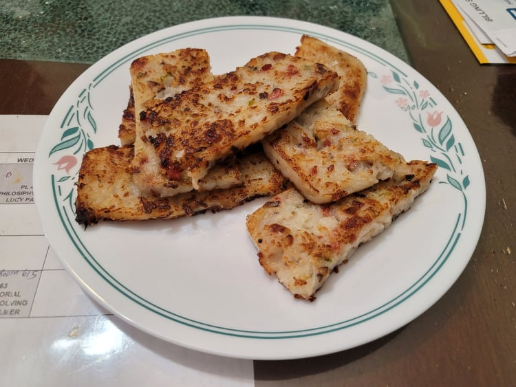

Lo Bak Go (Fried Turnip Cake)

Ingredients:
- 20 oz Daikon radish, grated
- 1 + more cup Water
- Canola oil
- 1 tbsp Dried shrimp, soaked, finely minced
- 5 Dried shiitake mushrooms, soaked, finely minced
- 1 Chinese sausage, finely minced
- 1 Scallion, finely chopped
- 1 1/4 cup Rice flour
- 1 tbsp Cornstarch
- 1/2 tsp Salt
- 1/2 tsp Sugar
- 1/4 tsp White pepper
- Optional: Oyster sauce
Instructions:
- Into a wok, place the grated radish and 1 cup water. Bring to a simmer and cook for 10 minutes, stirring occasionally. Then scoop the radish into a large mixing bowl. Place any remaining liquid into a measuring cup and add additional water until it becomes 1 cup of liquid. Add the liquid to the mixing bowl and let cool.
- Clean the wok and then heat a couple tablespoons of oil over medium heat. Add in the shrimp, mushrooms, and sausage and sauté for 5 minutes. Then remove from heat and immediately stir in the scallion. Set aside for later.
- Add in the rice flour, cornstarch, salt, sugar, and white pepper to the mixing bowl. Mix until homogenous. Then mix in the sausage, shrimp, and mushroom mixture from the pan, making sure to include any oil from the pan.
- For softer turnip cakes, add in 1/4 cup water or more to lighten the mixture. For denser turnip cakes, place the mixture onto a heated pan to thicken. Mix well and then let sit for 15 minutes. While waiting, prepare the steamer.
- Transfer the mixture to a well greased loaf pan. Cover the pan loosely with aluminum foil and then place into the steamer. Steam over medium-high heat for 50 minutes. Then remove the loaf pan from the steamer and let cool for 30 minutes. By then the turnip cake should have released from the walls of the loaf pan and be easily removable. Either save this in the fridge to slice and fry when you like, or slice and fry immediately.
- Heat a couple tablespoons of oil in a large pan over medium heat. Slice the turnip cake into 1/2 inch slices and fry until both sides are golden. Serve immediately with oyster sauce.